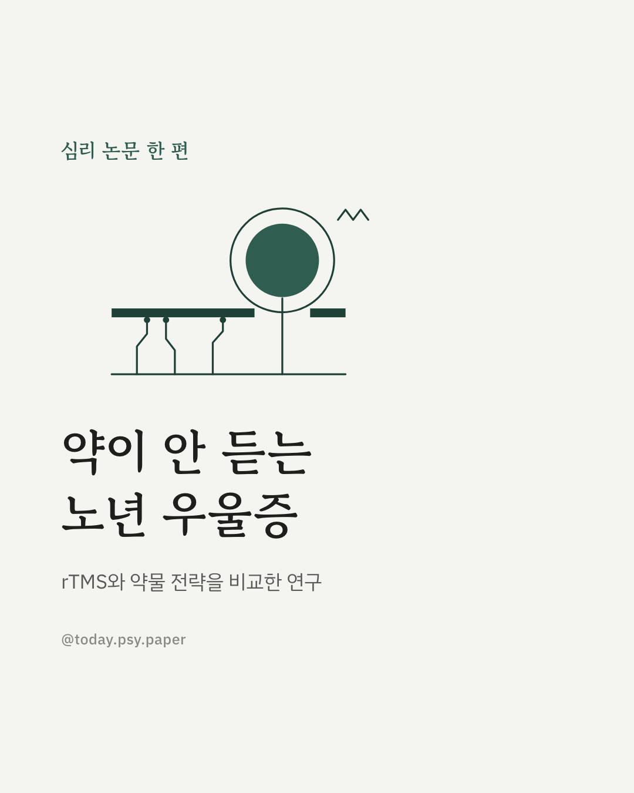
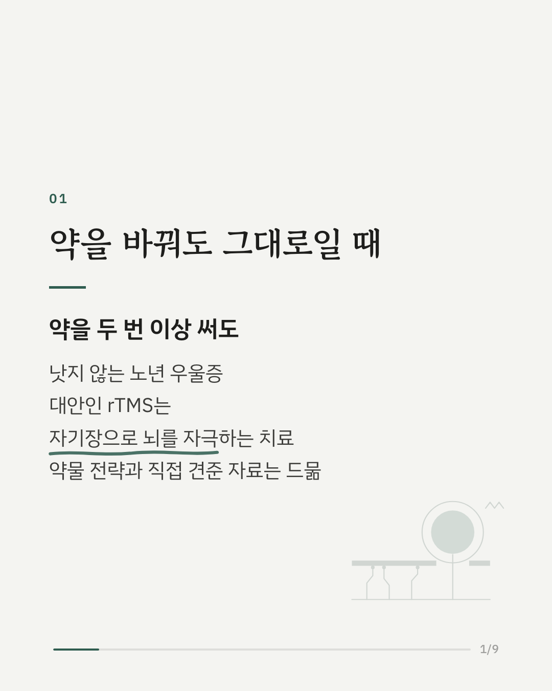
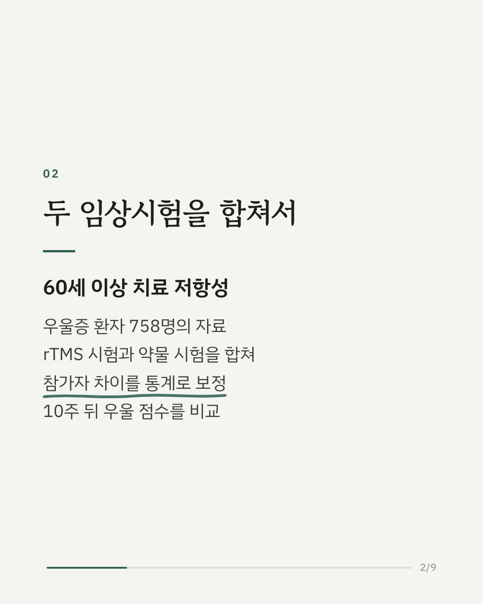
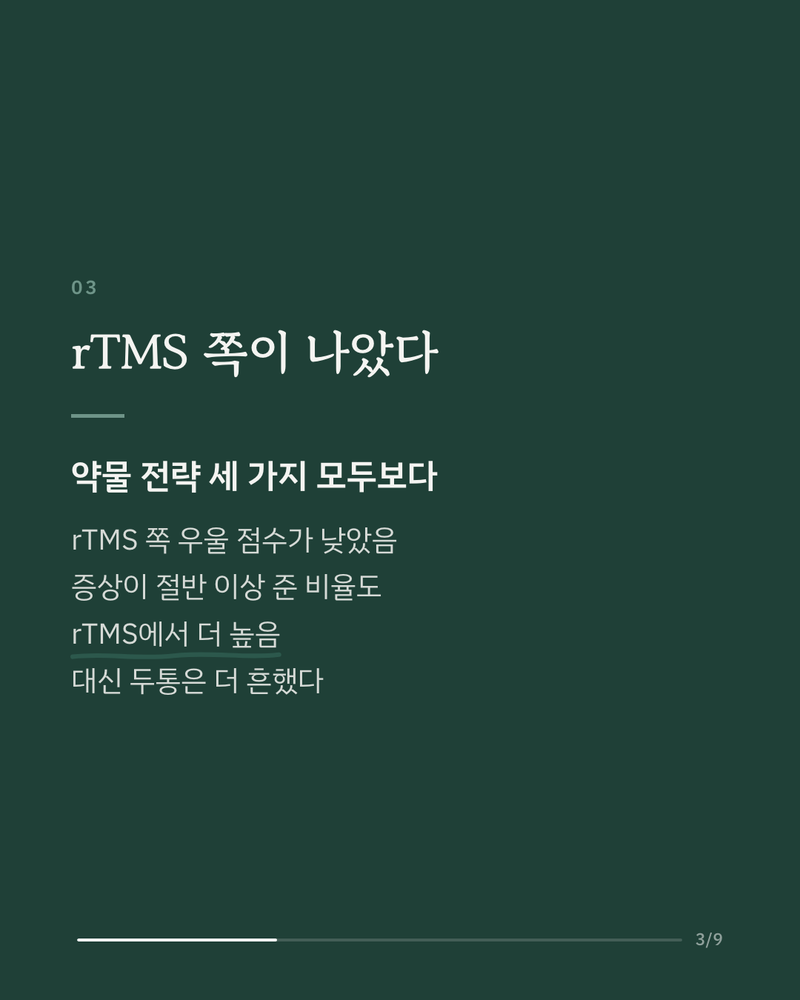
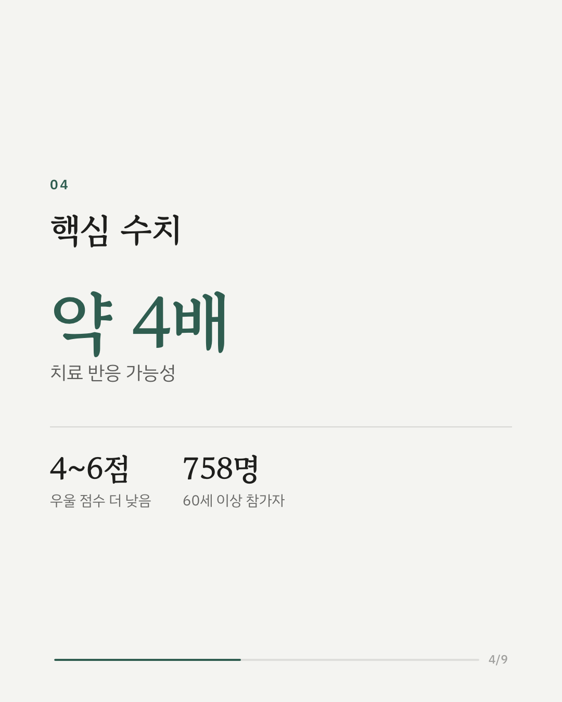
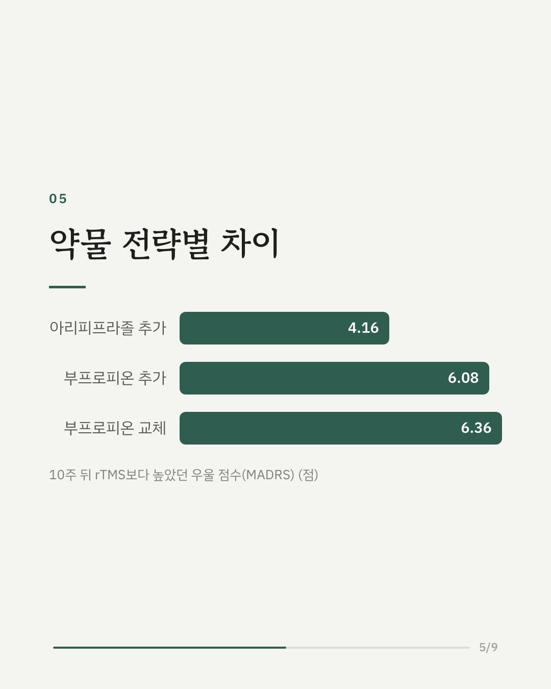
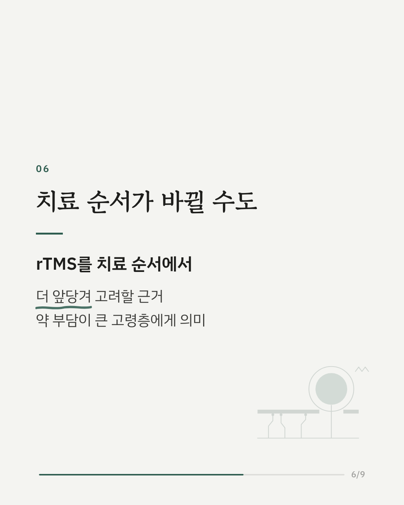
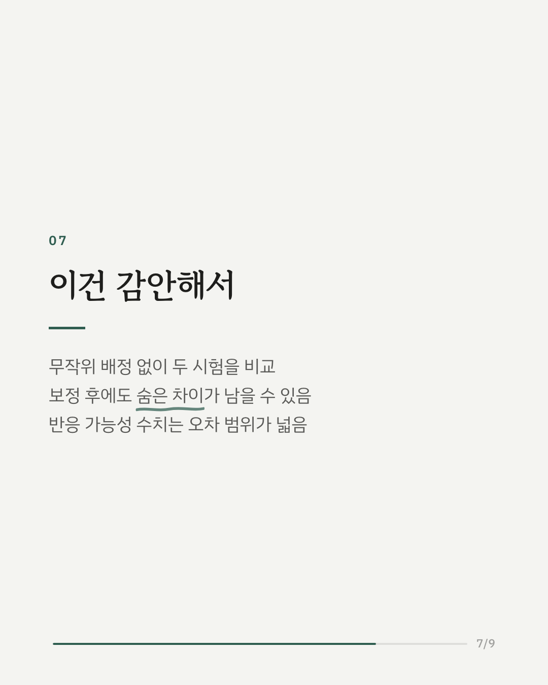
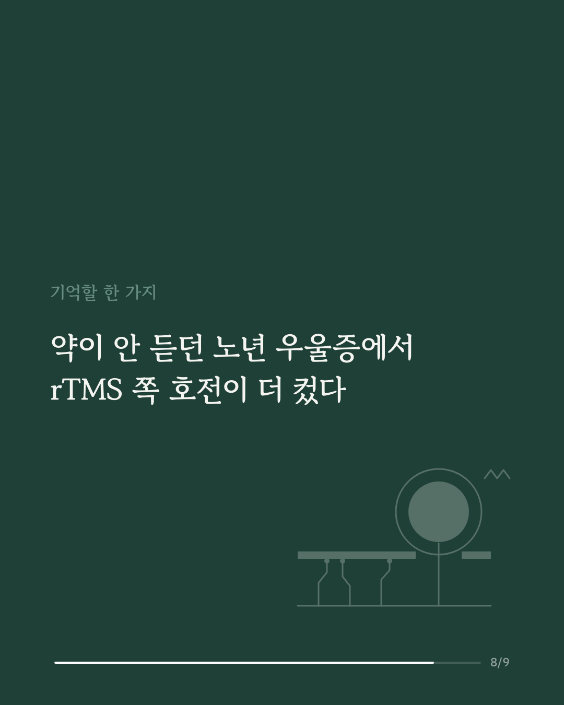
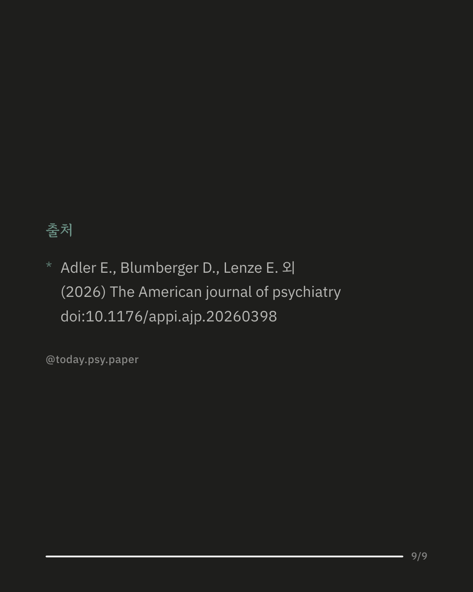

약을 두 번 이상 바꿔도 낫지 않는 노년 우울증은 드물지 않습니다. 이 연구는 60세 이상 치료 저항성 우울증 환자 758명의 자료로, 자기장으로 뇌를 자극하는 rTMS와 약물 전략을 비교했습니다. 두 개의 임상시험 자료를 합친 뒤 참가자 특성 차이를 통계로 보정했습니다. 10주 뒤 rTMS를 받은 사람들의 우울 점수는 기존 약에 아리피프라졸이나 부프로피온을 추가하거나 부프로피온으로 바꾼 경우보다 4~6점 낮았습니다. 증상이 절반 이상 줄어든 반응 가능성도 약 4배 높았습니다. 다만 두통은 rTMS 쪽에서 더 흔했습니다. 연구진은 rTMS를 치료 순서에서 더 일찍 고려할 근거가 된다고 봤습니다. 하지만 참가자를 무작위로 나눈 직접 비교가 아니어서, 보정으로 다 잡히지 않은 차이가 결과에 영향을 줬을 가능성이 있습니다. 출처: The American Journal of Psychiatry (2026), 'Effectiveness of rTMS vs. Pharmacotherapy in Late-Life Treatment-Resistant Depression: An Observational Study of Individual Participant Data From Two Randomized Clinical Trials' DOI: 10.1176/appi.ajp.20260398 #임상심리 #정신건강정보 #심리학연구 #논문리뷰 #우울증 #노인우울증 #치료저항성우울증 #경두개자기자극
python3 publish.py 42870348